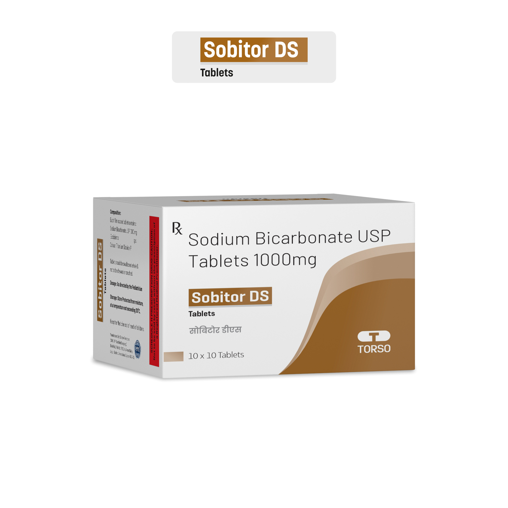

Sobitor DS
Indication & Usage
Sobitor 500 and Sobitor DS (Double strength: 1000 mg) is Enteric Coated Sodium Bicarbonate tablets. Sodium bicarbonate is a pH buffering agent, an electrolyte replenisher, systemic alkalizer used for the symptomatic treatment of heartburn, acid indigestion, and upset stomach as well as the treatment of metabolic acidosis associated with conditions such as severe renal disease and circulatory insufficiency due to shock.
Composition
Enteric Coated Sodium Bicarbonate Tablets 500 mg & 1000 mg
Mode of Action
Sodium bicarbonate is a systemic alkalizer, which increases plasma bicarbonate, buffers excess hydrogen ion concentration, and raises blood pH, thereby reversing the clinical manifestations of acidosis. It is also a urinary alkalizer, increasing the excretion of free bicarbonate ions in the urine, thus effectively raising the urinary pH.
Indications
Sobitor 500 / Sobitor DS is indicated in metabolic acidosis associated with many conditions including severe renal disease (e.g., renal tubular acidosis), uncontrolled diabetes (ketoacidosis), extracorporeal circulation of the blood, cardiac arrest, circulatory insufficiency caused by shock or severe dehydration, ureterosigmoidostomy, lactic acidosis and alcoholic ketoacidosis
Dosage
Moderate metabolic acidosis: 325 to 2000 mg orally 1 to 4 times a day. This information is for the registered medical practitioners only. Consult your medical practitioner before consuming the products.
Disclaimer : This information is for the registered medical practitioners only. Consult your medical practitioner before consuming the products.